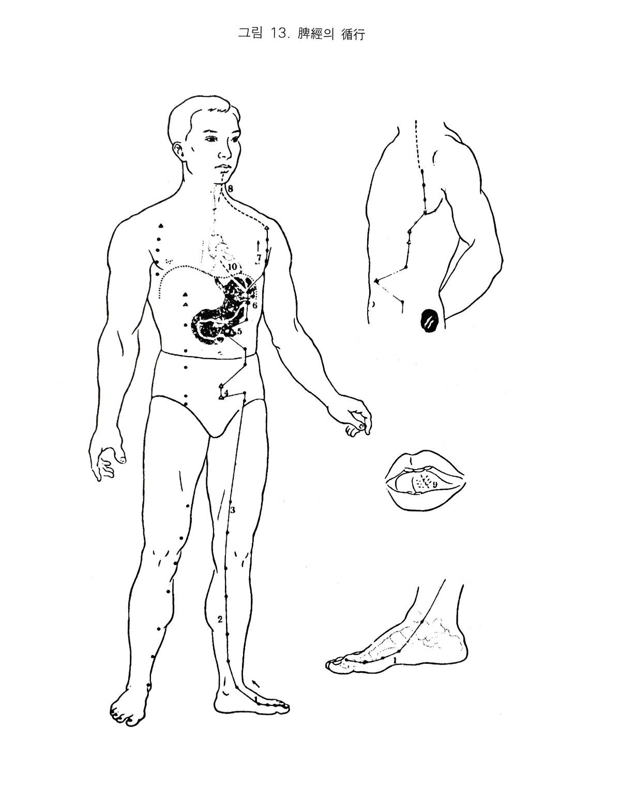

족태음비경
5. 족태음비경
1) 비장의 색체
비장은 족태음비경의 근원이 되며 그 경락을 관장하고, 위와 표리가 된다. 오행으로 토성이고, 방위로는 중앙이며 계절로 배당하면 장하(장마철)로서 화평.후실하는 속성이 있다.
비의 규는 구진이며 수곡을 이로부터 받아들인다. 기육을 자양하고 사지에 영양을 공급하므ㅡ로 비기가 약해지면 태타기와 한다. 진에 그 정화가 나타난다.
시진을 했을 때 황색이 나타나면 체질적 또는 병에서 비위병에 걸리기 쉽거나 현재 발병되어 있는 것이다. 황색이 광택이 있으면 생색이나 윤기 없는 더러운 황색이면 병이 깊은 것이다. 체취.구취 또는 배설물에서 향기로운 냄새가 나고, 음식은 감미를 좋아하나 감미를 지나치게 먹으면 비가 손상된다.
비는 음토로 조를 좋아하고 습은 싫어하며 습이 지나치면 비위가 손상된다. 생각을 많이 하면 신경성 위장병에 걸리기 쉽고 자기 뜻대로 되면 기분이 좋아 노래도 잘 부른다.
정신적인 측면에서는 ‘의’’를 간직하고 또는 오곡의 맛을 간직한다. 비병인 경우는 멀건 침을 잘 흘리거나 위액이 넘어온 것을 자주 삼키기도 한다. 비장은 수곡의 영양분을 사장에 분포하며 오랫동안 앉아 활동을 하지 않으면 비가 손상된다. 그 병변으로 딸꾹질을 한다.
2) 족태음비경의 순행
비경은 위경의 경맥이 모지 조갑부위의 은백으로 연결된 곳에서 시작된다. 내과의 앞을 지나 삼음교에서 슬안측을 지나고 내퇴내측을 상행하여 복부로 들어와 중극. 관원을 지나 복결. 대횡을 거쳐 하완에 이르고 다시 복애. 일월(담경). 기문(간경)을 거쳐서 중완을 지나 비에 속하고 위에 락한다.
복애에서 횡격막을 통과하여 대포를 지나 중부(폐경)을 경과하고 설근부를 통해 설하에 산포된다.
3) 비경의 병증
(1) 호흡기계
비혈이 부족하면 목극토하니 한열왕래하고 비주기육하니 비열하면 신열한다.
(2) 소화기계
비는 중앙토로 수곡을 소화시켜 그 영양분을 사장으로 보내 자양한다. 또한 직렴간의하니 생냉한 것이나 견경한 것을 먹지 못하도록 심의 작용을 보한다. 그러므로 사기가 여기에 침입하거나 비기가 혀약해지면 소화와 흡수를 하지 못하게 되어 식불하. 비 . 구. 애(트림)한다.
비는 태음토러 습이 잘 배출되지 않으면 냉하게 되며 목극토 까지 되어 복장. 장호. 손설. 장염.리질. 하농혈 하게 된다.
비경이 하초의 관원. 중극을 지나 측복에 이르고 다시 중완. 하안에 이르러 비에 속하고 위에 락하니 위. 장병은 우선 비위경의 본경이며 비기능이 허약해지면 오장이 불안해진다.
비기가 유여하면 복열. 복장하고 비경의 혈이 어혈되면 징가가 되며, 비의 적은 비기라 하여 위완부에 있는데 엎어놓은 술잔 크기이다.
비열하면 위액이 새어 나게 되므로 갈증이 생기니 중소라 한다.
비에 습열이 심하면 황달이 된다.
(3) 순환기계
비경의 락이 위중에서 단중으로 이러져 있어 수소음심경이 시작되니 가슴이 답답해지고 심하면 동통이 온다.
비경에 가볍게 풍사가 오면 나태해지거나 심하면 반신불수가 된다.
비는 중앙토로서 사장과 사지에 영양공급을 하는데, 실사를 감수하면 사지를 들지 못하게 되고 졸도하게 된다.
(4) 흉협복통류
비경이 중완. 하완에서 복애를 거쳐 흉측부로 이어져 대포에 이르고 있으므로 비경에 사기가 침입하면 심하급통. 복증절통이 발생하며 체해서 위병이나 흉간통까지 오는 경우가 있다.
(5) 운동기계
비는 음식의 영양소를 기육에 공급하고 있으며 비경에 병사가 침입하면 영양이 공급되지 않으면서 목극토하여 근육에 경련이 일어나고 쥐가 나며 땅기고 뻗치기도 한다. 비는 사지를 관장하고 있어 영양을 주고 있고 특히 기육을 자양하니 허약해ㅐ지면 사지가 나른하게 축 쳐지며 몸이 무겁고 백절이 다 나른해지며 살갗이 시들고 차가워지며 기육에 벌레가 기어가듯이 움직이며 근육이 아프고 실증에는 온몸이 쑤지고 아프게 된다. 비경이 족모지에서 내과 안쪽을 지나 슬내측에서 대퇴내측을 지나고 있어 고. 슬. 각. 부. 모지에 통증이 온다. 비는 주경으로 토극수를 해야 되는데 비의 기능이 약해지면 수분대사가 잘 되지 않아 제습종만이 생긴다.
(6) 안이비인후구계
비경이 대포에서 인후를 지나 설본에 이르니 사기가 침입하면 설근이 뻣뻣하거나 아파진다.
비는 중앙토이므로 열이 있으면 코가 먼저 빨개진다.
그 락이 인후에 이어 있으므로 실열인 경우 목이 마르게 된다.
(7) 비뇨기계
간경에 사기가 있으면 수분대사가 실조되어 수종이 생기는데 토극수로 실증에 소변이 잘 나오지 않고 심지어는 요폐까지 발생한다. 체해서 붓는 경우에 해당한다.
(8) 생식기계
간경락은 하복부의 임맥. 관원. 중극과 교차되고 충문. 부사도 지나므로 성기가 짓눌리는 듯이 아프게 된다. 습기가 지나치면 산증이 발생한다.
(9) 정신계
비는 기육을 주관하며 사지를 영양하므로 비가 허하면 몸이 무겁고 나른해지며, 비가 사기를 감수하면 목극토하여 화를 잘 내고 두풍. 두통 등이 일어난다.
(10) 기타
비는 황색이니 허열이 있으면 면황구건하고 비실열하면 그 표리관계인 위경이 협부를 지나가니 협통하며 비락이 단중에 이어지니 가슴이 갑갑하고 얼굴이 청색을 띤다.

오수혈
은백(정,목)
엄지발가락 안쪽의 발톱뿌리쪽 갈진 곳에서 발바닥 쪽으로 1푼 떨어진 곳이 혈이다. 정목혈이므로 심(화)이 허약했을 때 목생화으 원리대ㅐ로 보하는 혈이요 목극토 즉 간의 영향으로 비. 위에 이상이 있을 때 간.비가 동시에 조절되는
오행혈이며 정혈(수족단)이므로 성인의 졸도시나 어린이의 경기 등에 구급혈로 쓰인다. 기타 곽란, 가슴앓이, 위장관계로는 복통, 설사, 황달기, 부인병으로의 월경과다증이나 자궁의 경런증 등에 쓰이며 어린이으 복학, 두드러기에도 좋은 혈이다.
대도(형,화)
엄지발가락의 본관절을 만져보면 둥글고 굵다. 엄지발가락 끝에서(둘째 쪽이 아닌 안쪽)옆쪽을 눌러 올라가면 발가락 뼈가 굵어져 걸리는 곳이 있다. 이곳이 모지본관절의 내측전함중인 대도혈 자리이며 거죽의 엷은 피부와 발바닥의 두터운 바닥살 경계부위를 적백육제라 한다.
형화혈 즉 비경의 모격인 혈이므로 화생토를 시키는 원리에서 비위의 허냉에 보하는 오행혈이요 족냉증에 뜸을 뜨기도 하며 열이 날 때 해열시키는 자리이기도 하다. 기타 복통, 구토, 가슴앓이, 소화곤란성요통,하지의 무력이나 마비 등에 응용하나 요산관절염인 통풍인 경우 붓고 아픈 고이 이 부위이기도 하다.
태백(수,토,원)
발의 안쪽을 발목쪽에서 발끝을 향하여 밀어가면 모지의 관절 조금 못가서 뼈가 불거진 곳에 걸리게 되니 이곳이 모지본관절의 후함중으로 태백혈이며 관절을 지나서 앞쪽 함중이 대도혈이다. 침은 두 혈 다 옆쪽에서 뼈 밑을 향하여 찌른다. 태백혈은 비경의 대표적인 원혈이면서 오행학상토경중의 토혈이기에
소화기계 전반에 걸쳐 중요한 혈이다. 소화불량, 변비, 설사, 구토, 복통 등에 쓰이고 토경소생의 전간, 광증, 신경쇠약 등증도 비경소관으로 적응되며 비습한 사람, 팔 다리의 무력증, 전신의 권태감, 관절통 등외에도 비경의 대표격인 원혈이므로 비위의 기능조절이나 타경과의 연관관계에 있어서 보사혈로 쓰여진다.
상구(경,금)
족관절전면에 손을 대고 굴신하면 굵은 힘줄 두개가 있고 그 중간에 라느다란 힘줄이 있다. 그곳이 위경의 해계혈이다. 그 해계혈의 내과쪽 큰 힘줄을 넘어서 관절부가 간경으 중봉혈이요 중봉에서 가느다란 힘줄을 안쪽으로 넘으면 뼈짬이 있으니 그곳이 상구혈이다. 이 혈은 경금혈 즉 비토경의 폐금혈이므로 비의 실증에
사하는 혈(실즉사기모-토생금)이요 폐. 비에 병증이 겹쳐 있을 때 쓰이기도 하나 경금혈이므로 위무력. 위하수 등 기허에도 쓰인다. 기타 장호복통, 구토, 비적(비허), 이질, 경풍 등에 쓰이고 족관절의 염좌 때 이곳에 압통이 있는 경우가 많다.
음릉천(합,수)
정갱이 뼈의 안쪽 능선을 밀어 올라가면 곧게 뻗어있는 능선이 구부러진 곳이 있으니 그곳ㅇ서 가장 깊은 곳으로 무릎을 구부리거나 펴도 큰 차이가 없다. 바깥쪽 담경의 양릉천 보다는 약간 높은 편이다. 곽란 기타의 위장질환, 복냉, 설사에 쓰이고 음부의 통증,
부인병일체에 좋지만 뇨패증이나 오줌을 저리거나 오줌싸게 등에 이뇨혈로 쓰이거나 슬관절이나 다리 안쪽의 이상에 쓰이는 혈이다.